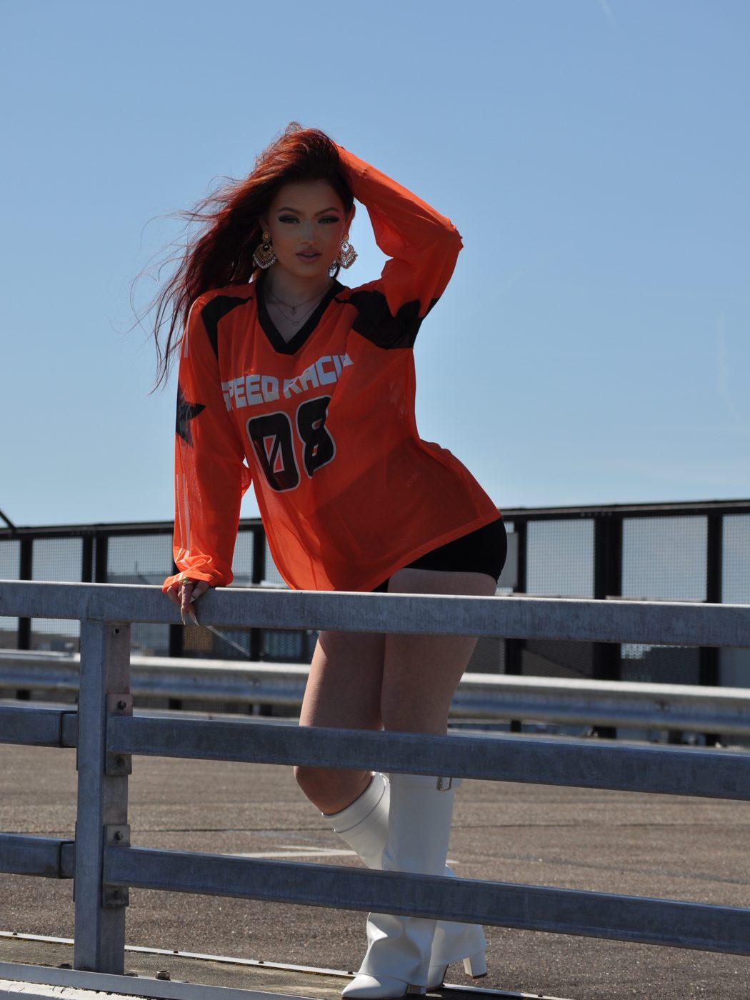
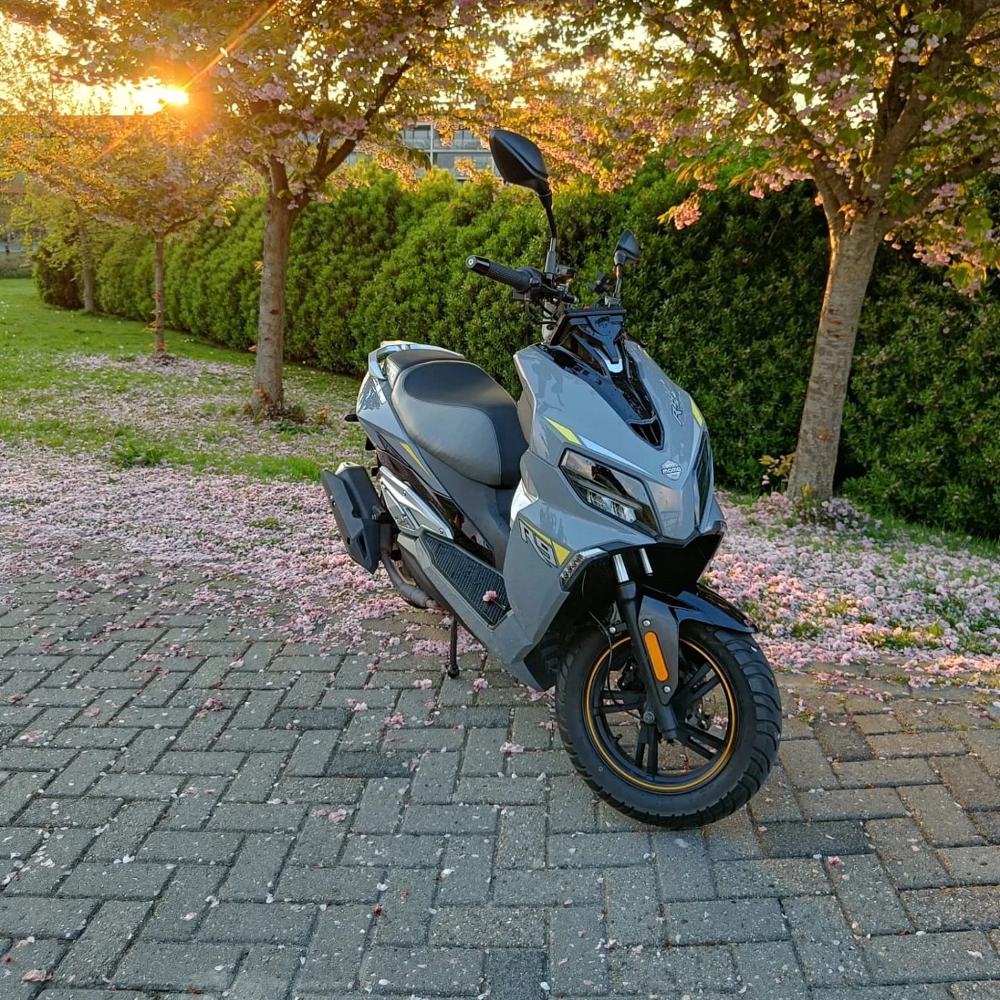
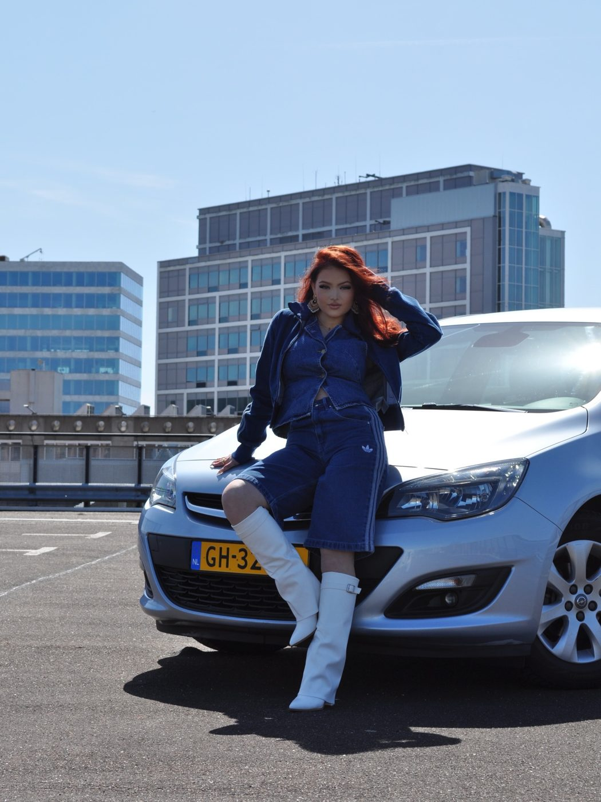
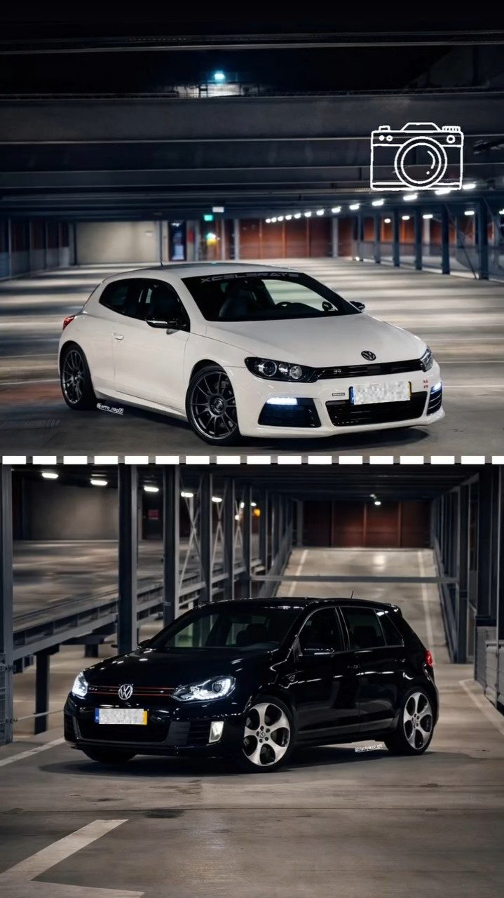
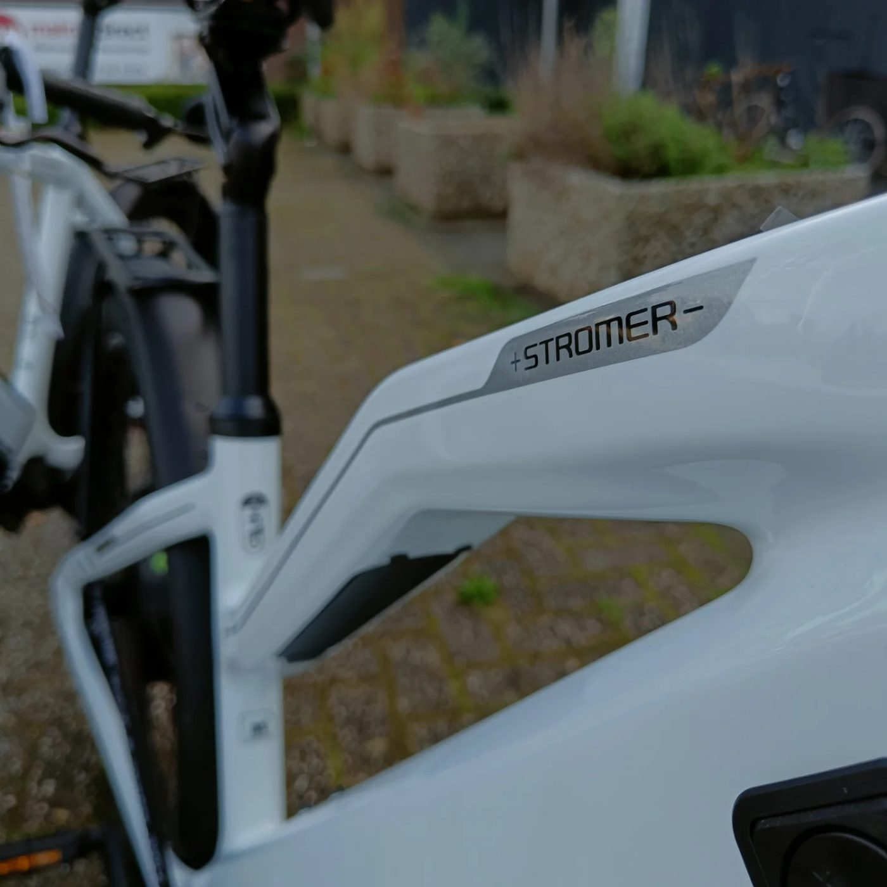
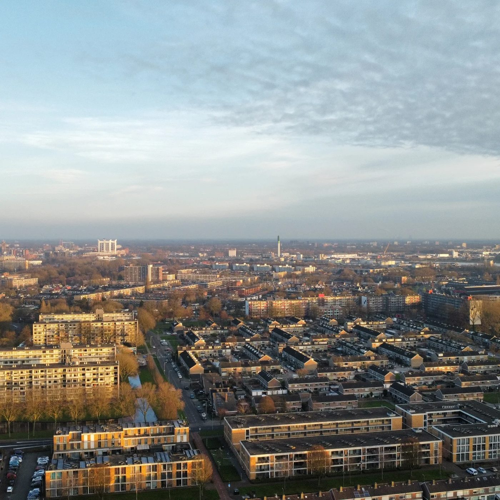

Een selectie van projecten die we met en voor onze klanten hebben gemaakt.

Fotoshoot op locatie voor Floor Bartels: krachtige portretten in oranje styling op een zonnig dak, voor haar socials en miss-verkiezing.
Floor Bartels · Miss Royal Netherlands ’26Bekijk op Instagram →
Foto’s en een korte reel van de MOMO R9, geschoten tijdens golden hour tussen de lentebloesem.
Lars HogenbirkBekijk op Instagram →
Autoshoot rond de Opel Astra van Robert: een avondsessie in de parkeergarage en een dagshoot op het dak, samen met Floor Bartels.
RobertBekijk op Instagram →
Sfeervolle avondshoots in de parkeergarage, met een witte Scirocco en een zwarte Golf GTI in de hoofdrol.
Autoshoots op locatieBekijk op Instagram →
Een klant vroeg om leuke maar eenvoudige beelden van de showroom en de fietsen. Close-ups en sfeerbeelden voor website en socials.
Lokale fietsenwinkelBekijk op Instagram →
Winterse dronebeelden en foto’s tijdens golden hour: de stad van bovenaf in warm, laag licht.
Eigen werkBekijk op Instagram →